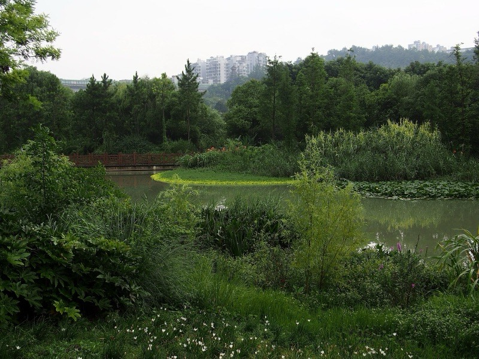
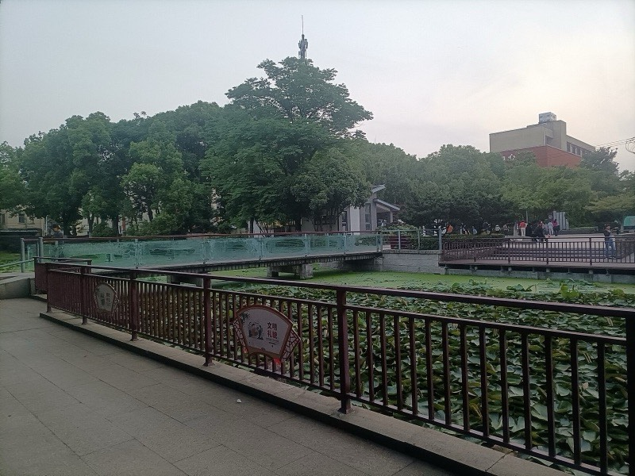
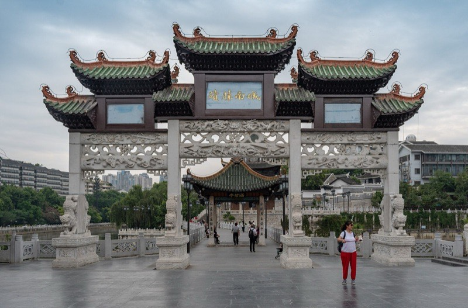

怎么排
两天半的贵阳，核心只有一件事要避开：10/24、10/25 是周末，青岩古镇白天人会很多。所以把青岩放在周六一早，赶在旅游团到之前逛完；周日要赶车或赶飞机，只安排离住处近、时间可控的市区景点。第一晚落地后不硬塞景点，甲秀楼夜景和青云市集都在老城、步行能串起来，顺便把第一顿贵州菜吃了。
路线图
10/23 周五 · 晚上到达
机场 / 高铁站 → 喷水池 → 甲秀楼 → 青云市集
- 18:00到达贵阳，打车或地铁进市区，入住喷水池 / 大十字一带
- 20:00第一顿：酸汤鱼或烙锅
- 21:00沿南明河走到甲秀楼，看夜景
- 21:45步行到青云市集，逛吃到想回去为止
- 23:00回酒店，第二天 07:30 出发
甲秀楼 · 南明河夜景
21:00–21:45贵阳的城市名片，明代建在南明河中的巨石上，三层木楼，前面是九孔的浮玉桥。晚上楼和桥都打灯，倒映在河里，比白天好看，也不用买票。
特点
- 老城中心，离喷水池步行约 15 分钟
- 沿河步道夜里人不少，但很安全
项目
- 走浮玉桥到楼下，河对岸翠微巷一侧取景最完整
- 白天想补拍的话，周日下午可以再来


青云市集
21:45–23:00甲秀楼附近的夜市街区，贵阳小吃基本都能在这里吃到，晚上越晚越热闹。第一晚来这里，一次把丝娃娃、豆腐果这些试个遍。
特点
- 小吃、烧烤、清吧和文创小店混在一起
- 周五晚上人多，排队的摊位一般值得排
项目
- 丝娃娃：薄饼皮自己卷十几种素菜丝，浇上蘸水
- 恋爱豆腐果、豆腐圆子、冰浆

10/24 周六 · 青岩古镇＋花溪
市区 → 青岩古镇 → 花溪 → 市区 → 东山寺 → 二七路
- 07:30打车去青岩古镇，约 40 分钟
- 08:15在镇上吃糕粑稀饭当早餐，然后逛古镇
- 12:00打车去花溪，约 20 分钟，午饭吃花溪牛肉粉
- 13:30十里河滩 / 花溪湿地公园，沿河走或骑行
- 16:00打车回市区，酒店休整
- 18:00东山寺看日落和城市灯光
- 19:30二七路小吃街当晚饭
青岩古镇
08:15–12:00明代屯兵建起来的石头城，城墙、城门、石板街都还在，四大古镇之一的名头不是白来的。周末上午 10 点后旅游团陆续到，早到的一个多小时是整天最舒服的时候。
特点
- 石板老街、定广门城楼、状元府
- 儒释道和天主教建筑在一个小镇里并存
项目
- 早餐吃糕粑稀饭，再买卤猪脚和玫瑰糖
- 登定广门城墙看古镇全貌


十里河滩 · 花溪湿地公园
13:30–15:30花溪河沿岸的一长段湿地公园，全程平路，河水清、草木多。上午在古镇走了一上午石板路，下午换成这种不费腿的慢走正好。
特点
- 免费，沿河步道和自行车道
- 10 月底不冷不热，适合散步
项目
- 走一段河边步道，过几座汀步石桥
- 入口附近可以租自行车，骑一圈约 1 小时


东山寺
18:00–19:00建在市区东边山崖上的小寺，爬一段台阶就能俯瞰整个老城。傍晚上去，看日落到华灯初上，是贵阳最省事的一个城市观景点。
特点
- 离喷水池打车 10 分钟左右
- 台阶较陡，天黑后下山注意脚下
项目
- 山顶平台看日落和老城夜景
- 时间赶的话可以跳过，直接去二七路

10/25 周日 · 两座博物馆，晚上离开
酒店（寄存行李）→ 地质博物馆 → 省博物馆 → 黔灵山（可选）→ 酒店 → 机场 / 高铁站
- 07:45退房，行李寄存在前台，附近吃一碗肠旺面
- 08:25打车去观山湖区的地质博物馆，约 30 分钟
- 09:00贵州省地质博物馆（已约 09:00–11:00 场次）
- 10:45打车去省博物馆，同在观山湖区，车程十来分钟
- 11:00贵州省博物馆（预约时选能覆盖 11:00 的场次）
- 13:00午饭：豆米火锅或辣子鸡
- 14:00黔灵山公园（可选），看猴子、走到弘福寺
- 16:00买特产，回酒店取行李
- 17:00坐飞机：最晚这时从市区出发去龙洞堡机场
- 18:00坐高铁：最晚这时从市区出发去贵阳北站
贵州省地质博物馆
09:00–10:45贵州是「古生物化石王国」，这里收的就是这些家底：两亿多年前三叠纪海洋里的鱼龙、海龙，关岭、兴义一带出土的海百合，还有讲喀斯特地貌怎么形成的展厅。免费，评价很高，和省博是同一片区的邻居，正好一上午连着看。
特点
- 地址：观山湖区云潭南路 607 号，周一闭馆
- 化石标本量大，大型鱼龙化石很震撼
项目
- 先看三叠纪海洋爬行动物化石，再看喀斯特和矿产展厅
- 按预约的 09:00–11:00 时段入馆，带身份证


贵州省博物馆
11:00–12:45这一趟不去黔东南的村寨，省博就是一次看全贵州的地方：苗、侗、布依等民族的服饰和银饰，加上从古生物化石到近代的贵州历史。免费，但必须预约。
特点
- 在观山湖区林城东路，离地质博物馆打车十来分钟
- 民族服饰和银饰展厅最值得看
项目
- 先看民族文化展厅，再看历史展厅
- 入馆带身份证原件

黔灵山公园 · 弘福寺
14:00–15:45 · 可选市区里的一座大山公园，以满山的猕猴出名。往上走到弘福寺，是贵州香火最旺的寺庙之一，山上还能俯瞰全城。
特点
- 猴子不怕人，会抢包和吃的
- 上山有台阶也有观光车
项目
- 看猕猴（别喂、别拿着食物逗）
- 走到弘福寺，再沿山路看城市



预约与门票
这一趟要提前办的是两座博物馆的预约。其余地方要么免费，要么到现场买。
状态：已约好 10/25 09:00–11:00 时段；
入馆：到时打开预约记录里的入馆码（「文旅绿码」）核销，带身份证；
多少钱：免费；周一闭馆，咨询电话 0851-85801568。
在哪约：只能在微信里约，搜公众号「贵州省博物馆」点「参观预约」，或者小程序「贵州省博物馆门户」。博物馆说明过这是唯一官方渠道，美团、携程、抖音等第三方都没有授权；
什么时候：报道里写的是可提前 10 天预约，所以现在就能约 10/25，周末名额紧，越早越好；
怎么填：个人预约 → 选 10 月 25 日 → 选能覆盖 11:00 入馆的时段 → 填姓名、身份证号、手机号，同行的人用「添加参观人」一起约；
入馆：带身份证原件。70 岁及以上老人、现役军人和退役军人凭证件免预约。开放时间一般是 9:00–17:00，16:00 停止入馆；
多少钱：免费。遇到收钱「代约」的都不是官方。
古镇街巷可以自由进出，城墙、状元府等几处景点按现场的规定收费，到了看游客中心的告示，以当天为准。
入园和上山观光车按现场的规定收费，出发前看一眼公园的最新公告。
10/23 甲秀楼外景、南明河、青云市集 · 10/24 十里河滩、东山寺外的山路、二七路 · 10/25 翠微巷。吃喝另算。
吃什么
- 粉面（早餐）：肠旺面、花溪牛肉粉、羊肉粉、素粉。周日早上的肠旺面在老城随便一家老店都行。
- 小吃：丝娃娃、恋爱豆腐果、豆腐圆子、洋芋粑、冰浆。第一晚在青云市集一次吃齐。
- 正餐：酸汤鱼、烙锅、辣子鸡、豆米火锅。三顿正餐正好一样一顿。
- 青岩特产：卤猪脚、玫瑰糖、糕粑稀饭。
- 带走的：牛肉干、刺梨干、老干妈，周日下午在老城买。
实用信息
交通
老城里地铁 1、2、3 号线加步行就够了。青岩、花溪、省博和黔灵山之间都隔着一段距离，直接打车最省时间：喷水池到青岩约 40 分钟，到龙洞堡机场和贵阳北站都是 30–40 分钟。周日傍晚路上车多，去机场或车站按上面的时间轴提前出发。
天气与穿着
10 月底贵阳白天大约 12–20℃，早晚偏凉，常有小雨，「天无三日晴」不是夸张。带折叠伞、一件薄外套，鞋要防滑，青岩的石板路和东山寺的台阶下雨后会滑。
容易踩的坑
- 黔灵山的猴子会抢包和吃的，手机和塑料袋都收好。
- 两座博物馆都免费，只认官方渠道的预约，别通过链接或「代约」付钱。
- 青岩古镇周末上午 10 点后人明显变多，早到最重要。
两天半不出贵阳，看的是老城、古镇、山和博物馆，吃的是一整套贵阳味道。要提前办的只有两座博物馆的预约，剩下的按体力增减就行。